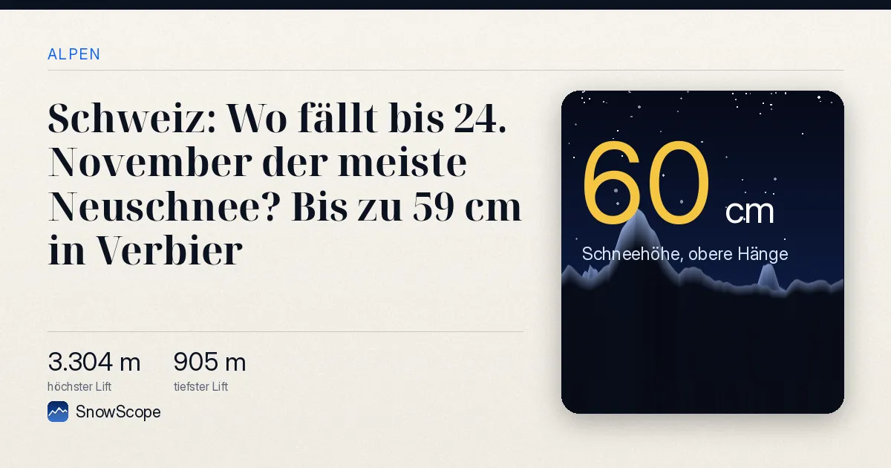
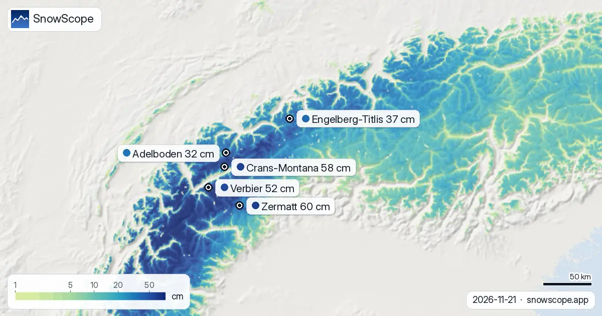

Schweiz: Wo fällt bis 24. November der meiste Neuschnee? Bis zu 59 cm in Verbier
Schnee-Check für Samstag, 21. November: 14 von 14 Gebieten in der Schweiz sind oben weiß, am meisten liegt in Zermatt (60 cm).
Die Live-Schneeprognose für Verbier in der SnowScope-AppSchneehöhen, Pulverschnee-Alarme und 3D-Karte, gratis.
Neuschnee im Anmarsch
Bis 24. November sagt die Vorhersage Verbier 59 cm, Crans-Montana 58 cm und Engelberg-Titlis 51 cm.
| Skigebiet | Schneehöhe | Neuschnee, 72 h | Erwartet, nächste Tage | Gipfel |
|---|---|---|---|---|
| Verbier | 52 cm | 82 cm | 59 cm | 3.304 m |
| Crans-Montana | 58 cm | 74 cm | 58 cm | 2.872 m |
| Engelberg-Titlis | 37 cm | 58 cm | 51 cm | 3.040 m |
| Zermatt | 60 cm | 76 cm | 48 cm | 3.872 m |
| Adelboden | 32 cm | 52 cm | 47 cm | 2.193 m |
| Mürren/Schilthorn | 32 cm | 54 cm | 45 cm | 2.949 m |

Neuschnee der letzten 72 Stunden
Am meisten Neuschnee in 72 Stunden: Verbier 82 cm, Zermatt 76 cm und Crans-Montana 74 cm.
Gebiet für Gebiet
Verbier hat oben 52 cm; die Lifte reichen bis 3.304 m. Neuschnee: 82 cm in drei Tagen, Vorhersage 59 cm bis 24. November.
Crans-Montana hat oben 58 cm; die Lifte reichen bis 2.872 m. Neuschnee: 74 cm in drei Tagen, Vorhersage 58 cm bis 24. November.
Engelberg-Titlis hat oben 37 cm; die Lifte reichen bis 3.040 m. Neuschnee: 58 cm in drei Tagen, Vorhersage 51 cm bis 24. November.
Zermatt hat oben 60 cm; die Lifte reichen bis 3.872 m. Neuschnee: 76 cm in drei Tagen, Vorhersage 48 cm bis 24. November.
Schneehöhen nach Skigebiet
Die Hälfte der 14 Gebiete hat oben mehr als 32 cm, die andere Hälfte weniger.
Der Rest der Top fünf: Crans-Montana (58 cm), Verbier (52 cm), Aletsch Arena (40 cm) und Engelberg-Titlis (37 cm).
Tipp für einen Kurztrip
Für einen Kurztrip ist Verbier die Wahl: jetzt 52 cm oben und bis 24. November weitere 59 cm.
Für einen Kurztrip früh starten und die höchsten Lifte zuerst fahren, dort liegt meist der beste Schnee.
Abseits der Pisten
Nach 82 cm Neuschnee ist oben Pulver möglich. Touren und Freeride nur mit gelesenem Lawinenlagebericht, LVS-Gerät, Schaufel und Sonde.
So eine frische Schicht macht den Unterschied zwischen abgekratzten Pisten und griffigem Schnee, gerade auf steilen Abfahrten.
Tipps für Skifahrer
- Frühsaison: Ski wachsen, der Schnee ist oft stumpf.
- Abseits der Piste nur nach dem Lawinenlagebericht.
- Vor der Anfahrt prüfen, welche Lifte laufen.
Zu diesen Zahlen
Die Schneehöhen der Skigebiete sind der meiste Schnee in den oberen Hängen am angegebenen Tag; es sind Schätzungen für eine Fläche, keine Messung an einem Punkt. Prognosen können sich ändern. Lies vor dem Freeriden immer den offiziellen Lawinenlagebericht.
Diesen Bericht zitieren
Für Forschung, Lehre oder Presse: Zahlen und Grafiken sind unter CC BY 4.0 mit dieser Quellenangabe frei nutzbar.
SnowScope (2026), Schweiz: Wo fällt bis 24. November der meiste Neuschnee? Bis zu 59 cm in Verbier, https://snowscope.app/blog/de/2026/11/neuschnee-schweiz-21-november-2026.html, abgerufen am 2026-11-21
SnowScope (Atlas Labs). (2026, November 21). Schweiz: Wo fällt bis 24. November der meiste Neuschnee? Bis zu 59 cm in Verbier. SnowScope snow reports. https://snowscope.app/blog/de/2026/11/neuschnee-schweiz-21-november-2026.html
BibTeX
@misc{snowscope2026neuschneeschweiz21novemb,
author = {{SnowScope (Atlas Labs)}},
title = {Schweiz: Wo fällt bis 24. November der meiste Neuschnee? Bis zu 59 cm in Verbier},
year = {2026},
month = nov,
howpublished = {\url{https://snowscope.app/blog/de/2026/11/neuschnee-schweiz-21-november-2026.html}},
note = {Published 2026-11-21 11:59 UTC; accessed 2026-11-21}
}· CC BY 4.0 · Methoden, Daten und Werkzeuge →
Verbier: Schnee und Temperatur nach Höhe, dieser Winter vs letzter (Werkzeuge) →
Verbier folgen
Gratis: eine Nachricht, wenn Neuschnee kommt, und jeden Morgen die Vorhersage.